Posts about papers, events, news, and more
Gang joins experts to discuss U.S. China Energy Transition.
Gang opens his Energy Systems Analysis class and hope the energy community find it resourceful.
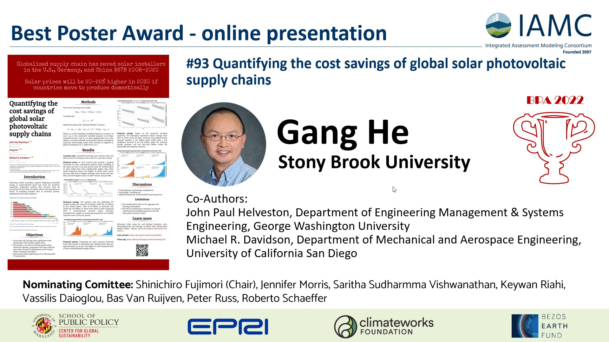
Our solar global supply chain paper won the best poster award in the IAMC 2022 annual meeting.
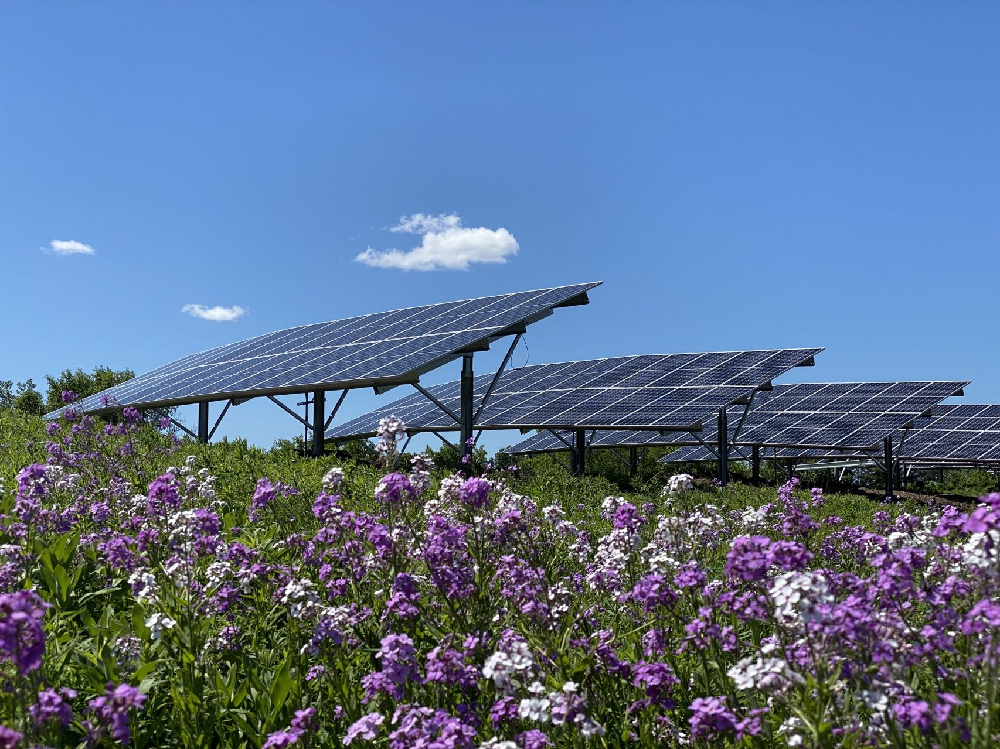
A summary of our 2022 Nature paper.
Globalized supply chain has saved solar installers in the U.S., Germany, and China $67B 2008-2020, and solar prices will be 20-30% higher in 2030 if countries move to produce domestically.
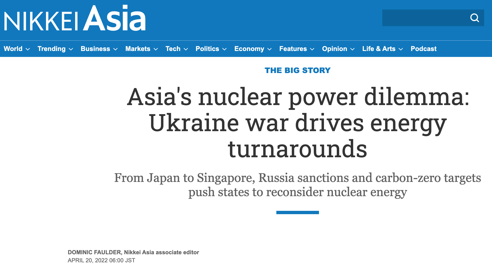
Nikkei Asia quotes Gang’s comments on nuclear.
Hydrogen could link power and transport systems and reduce costs of deep decarbonization for both sectors.
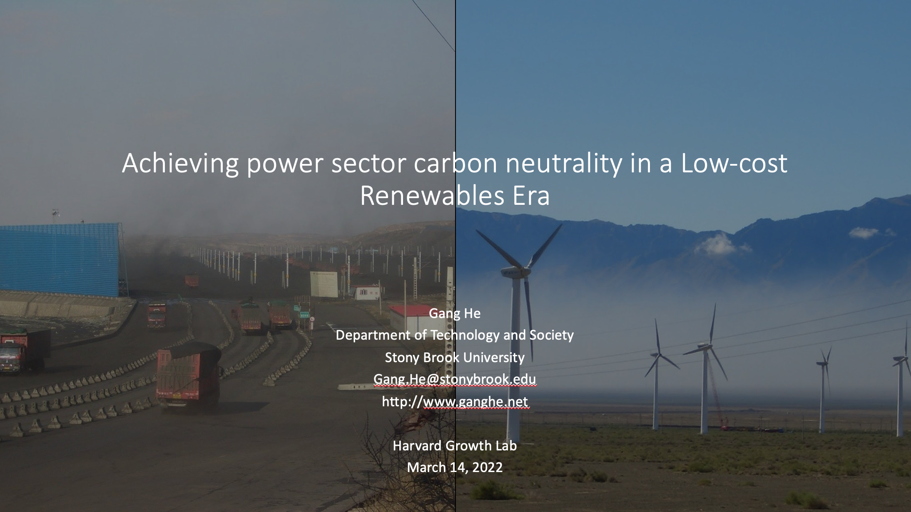
Gang shares research at Harvard Growth Lab Research Seminar.
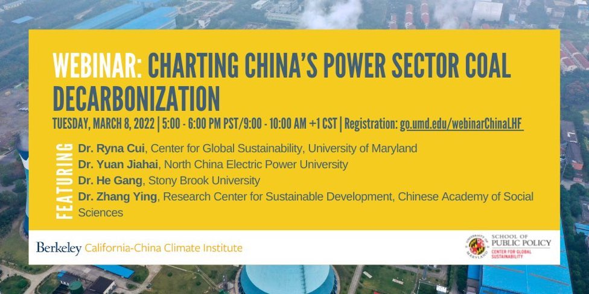
Gang joins experts to discuss coal transition and decarbonization.
In this Perspective, we summarize the key features of China’s CO2 emissions, its reduction processes and successes in meeting climate targets.
Larger balancing area offers direct flexibility benefits.
Low cost renewables reduced the need for CCS by 80%, and water constraints nearly squeeze CCS out.
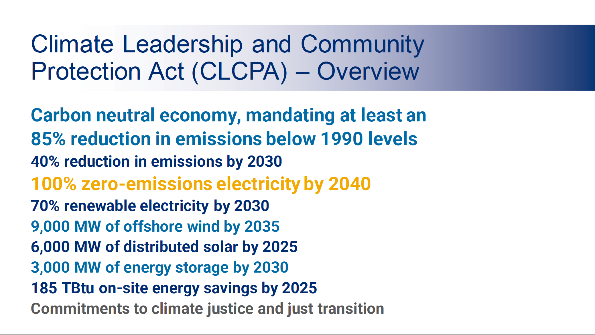
Dr. Gang He served as a member of the technical advisory group for the scoping plan.
AI algorithms in wind power technology innovation.
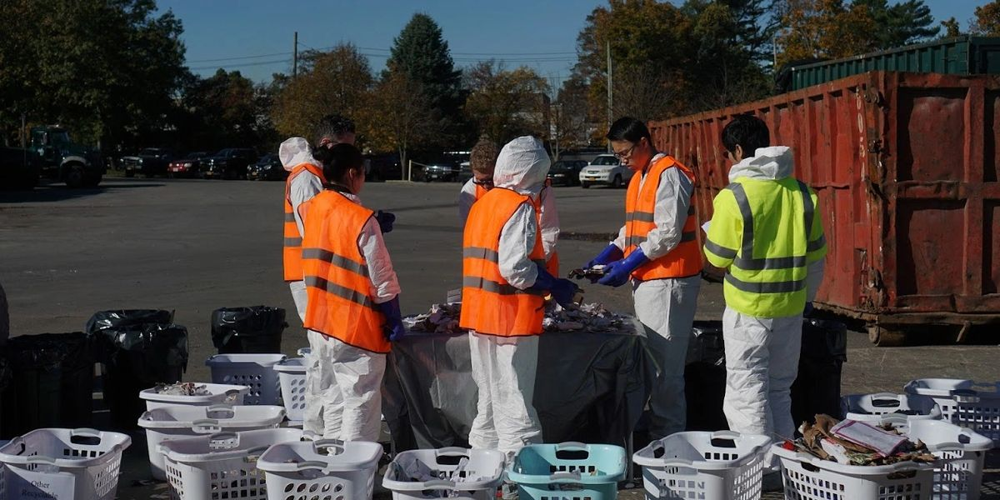
Sorting garbage is messy, but important.
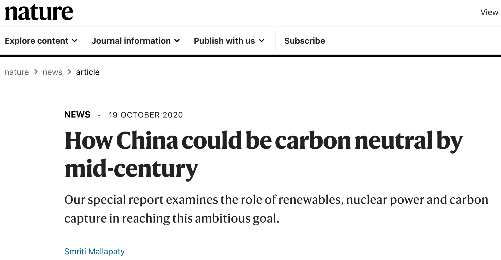
Our work is reported by Nature.
Aggressive coal-transition pathway is needed to achieve carbon nutrality goal while achieving water saving, avoiding premature death.
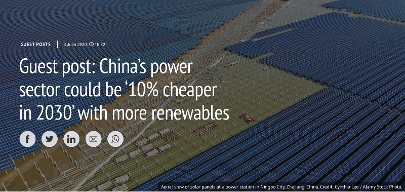
A post explaining our 2020 Nature Communications paper.
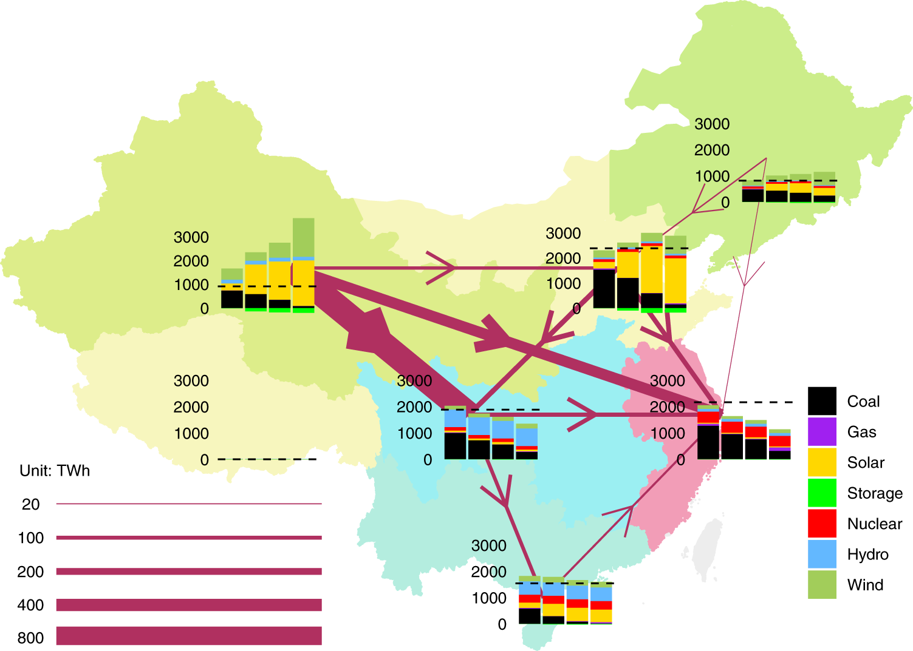
A renewable dominant pathway is not just technogical sound, but also cost effective.
On January 9-10, 2020, the Department of Technology and Society, Stony Brook University, hosted an NSF funded workshop.
Dr. Gang He joined a Stony Brook University experts team to testify for NYCLCPA.
Funding, coordination, and technology are key to deliver full electrification.
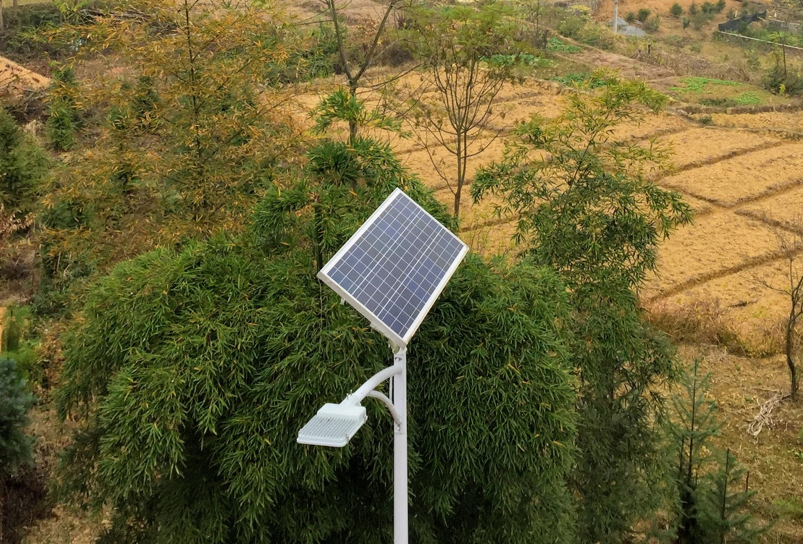
The ‘Electricity for All’ programme was hugely successful, reaching even the remotest populations.
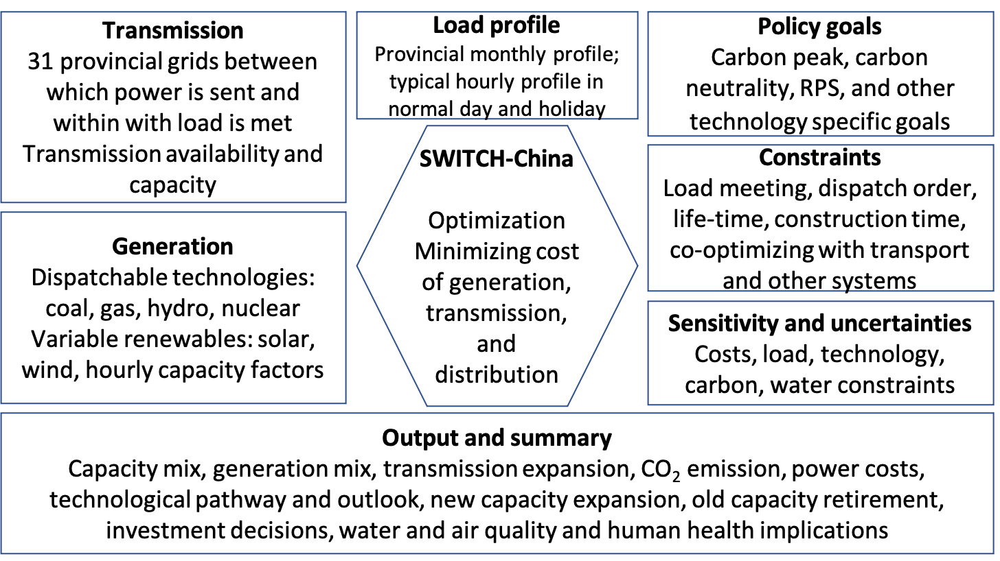
SWITCH-China, an integrated model for power sector decarbonization.
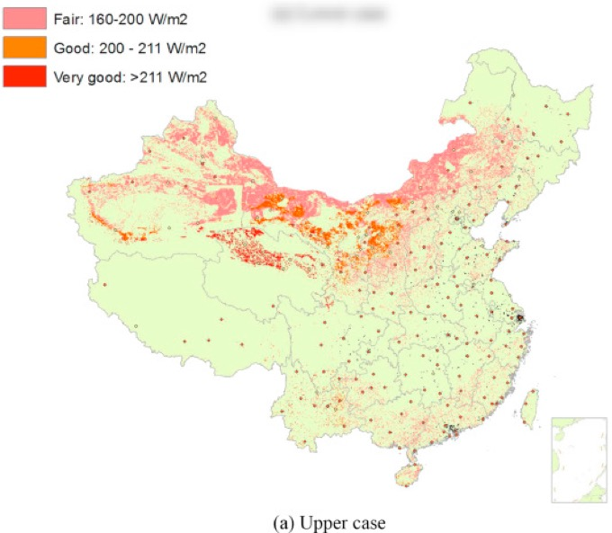
We utilized 10-year hourly solar irradiation data from 2001 to 2010 from 200 representative locations to develop provincial solar availability profiles.
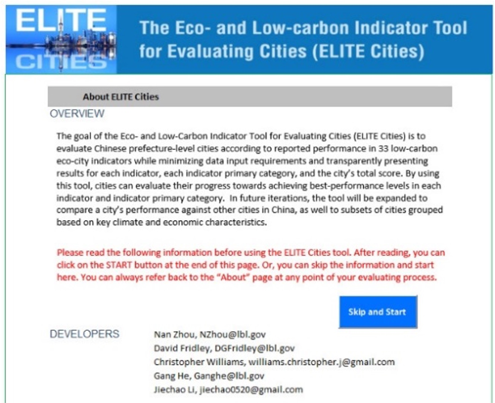
ELITE Cities is an Excel-based tool that measures city low-carbon development progress on 33 key indicators.
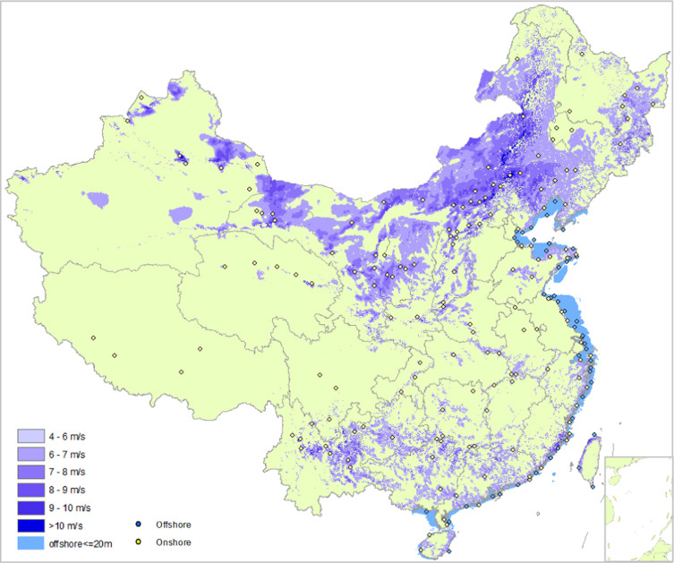
We utilized 200 representative locations for which 10 years of hourly wind speed data exist to develop provincial capacity factors from 2001 to 2010, and to build analytic wind speed profiles.
The paper examines the application of additionality in the Chinese wind power market and draws implications for the design of effective global carbon offset policy.